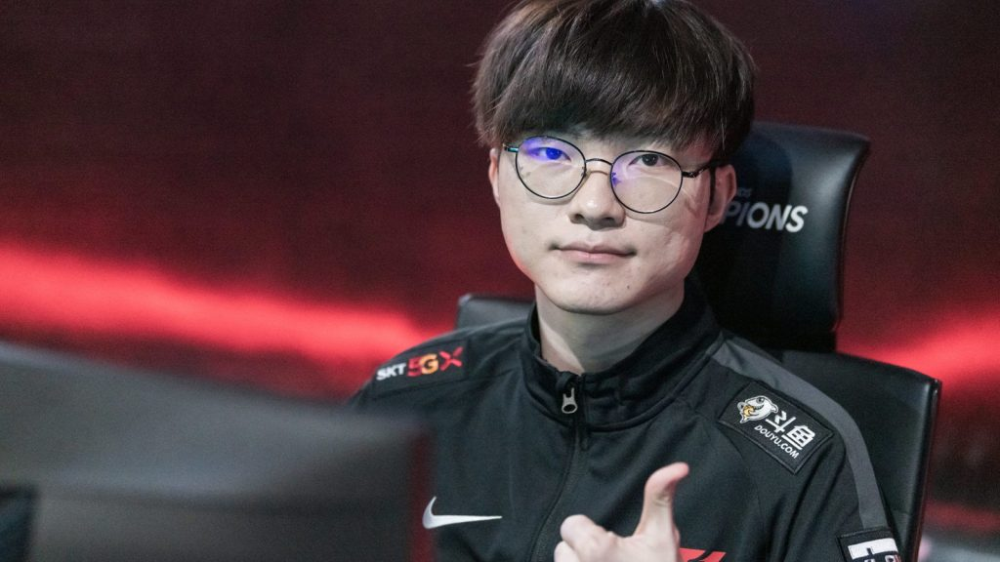
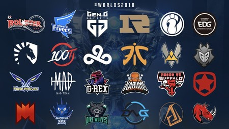

League Of Legends cuenta con un competitivo a nivel profesional muy estructurado, contando con los E-sports mas altos, o grandes del mundo.
Contando con los mejores jugadores e incluso leyendas dentro del LoL como: Faker o Josedeodo(nivel Latinoamerica)
La mayor parte de los buenos jugadores en el mundo se encuentran en el super servidor de Korea o Asiaticos.
Existe un multitud de ligas dependiendo las regiones en donde se desarrollen. Siendo eventos muy grandes e importantes para la comunidad de LoL en general.
-Entre las más famosas ligas tenemos:
-League of Legends Championship Series (LCS), principal liga de Norteamérica.
-League of Legends European Championship (LEC), principal liga de Europa.
-League of Legends Pro League (LPL), principal liga de China.
-League of Legends Champions Korea (LCK), principal liga de Corea.
-League of Legends Pacific Championship Series (PCS), liga que reúne a las regiones de Taiwán, Hong Kong, Macao y el sudeste asiático.
-Campeonato Brasileiro de League of Legends (CBLoL), principal liga de Brasil.
-Liga Latinoamérica (LLA), principal liga de Latinoamérica.
-League of Legends Continental League (LCL), principal liga de la Comunidad de Estados Independientes.
-League of Legends Japan League (LJL), principal liga de Japón.
-League of Legends Circuit Oceania (LCO), principal liga de Oceanía.
-Turkish Championship League (TCL), principal liga de Turquía-Vietnam Championship Series (VCS), principal liga de Vietnam
